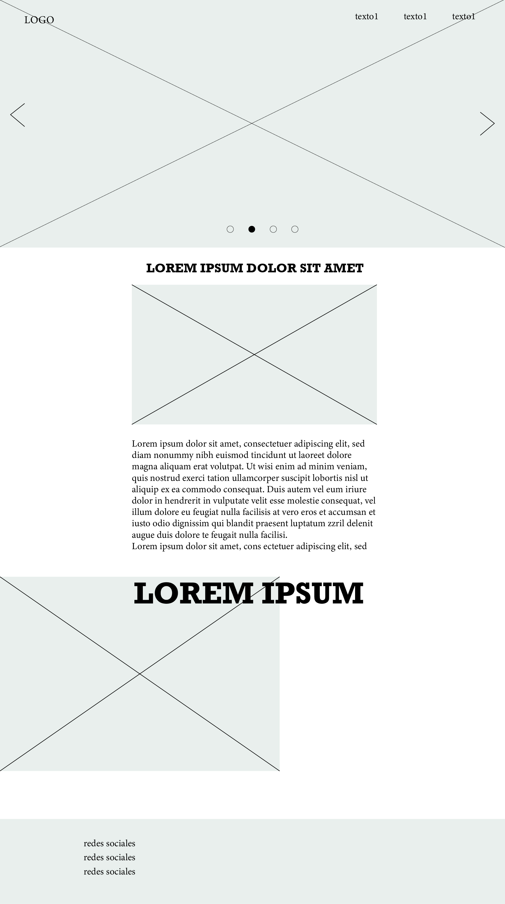

PROTO-PERSONAS

Alex (43 años)
Alex es profesor de física de enseñanza media, vive con sus dos hijas y su pareja. Le gusta viajar , tomar cerveza con sus amigos mientras hacen asado y el metal, no le gusta ver televisión ni salir de compras.
A una de sus hijas le interesa el género musical, por lo que decide investigar en internet

Macarena (16 años)
Macarena va en segundo medio, vive con sus papás en la comuna de maipú, le gusta ir a la plaza con sus amigos, escuchar música, y a veces escribe canciones, no le gustan las matemáticas, ni las redes sociales.
Debe hacer un trabajo para la escuela donde el tema es libre y escogió una banda de hip hop chilena.

Carla (33 años)
Carla es compositora, vive sola en un departamento ubicado en santiago centro, su pasión es la música, le gusta quedarse en su casa mientras escribe con su gato "Brotis", es reservada y no le gusta que invadan su espacio personal.
Busca inspiración para crear la portada de su último sencillo.
MOODBOARD
COLORES
Una carta cromática presenta colores sin proporción. Una paleta cromática sí lo hace (la proporción es la diferencia entre ambas). En una paleta cromática también es importante cuidar la posición de cada color, para la interacción más efectiva con su vecino inmediato. Al momento de diseñarla se recomienda tener en mente, por un lado, la posibilidad de trabajar con La paleta se basa en el contraste de los colores, se combina un el negro con un naranjo particularmente saturado que destaca por sobre el grises y negros generados por las imagenes armonías de color y, por otro, la de trabajar con esquemas de contraste.
TIPOGRAFÍAS
oswald
La tipografía Oswald es un estilo de fuente condensed que está muy de moda ya que el aspecto y contundencia de sus caracteres la hace muy especial. Su diseño es ideal para anuncios con un toque actual y serio pero con personalidad propia.
Open Sans
Open Sans es una tipografía humanista sans-serif ampliamente utilizada en el diseño web debido a su alta legibilidad en pantallas y tamaños pequeños. Es una fuente disponible en Google Fonts que nunca pasará de moda por su versatilidad. Es ideal para webs que quieran transmitir una apariencia neutral y amigable.
Wireframe de portada
Es importante que aquí indique qué partes toma de cada antecedente. También puede sumar alguna indicación que apoye la correctar lectura de su Wireframe. Recuerde que puede usar wireframe.cc, AdobeXD, Figma o el programa que más le acomode para resolver esta versión esquemática de la página de manera rápida, obtieniendo un resultado claro.
Wireframe de página interior
Es importante que aquí indique qué partes toma de cada antecedente. También puede sumar alguna indicación que apoye la correctar lectura de su Wireframe. Recuerde que puede usar wireframe.cc, AdobeXD, Figma o el programa que más le acomode para resolver esta versión esquemática de la página de manera rápida, obtieniendo un resultado claro.